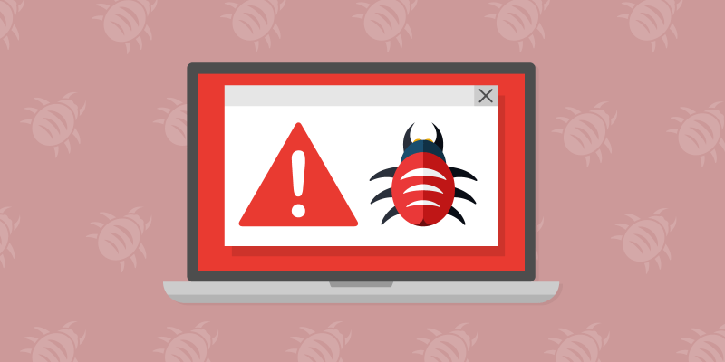
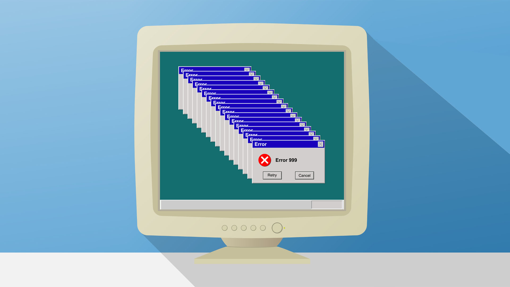
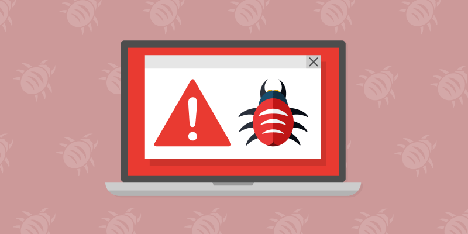
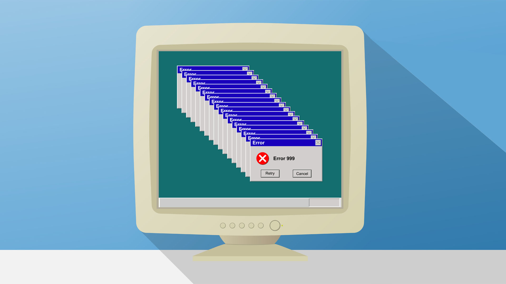

Kas ir datorvīruss?
Datorvīruss ir datorprogramma, kas spēj patstāvīgi sevi reproducēt un inficēt datoru. Vīruss var sabojāt vai iznīcināt datnes un informāciju datorā.
Vīrusi vairojas, ieviešot sevi citu programmu izpildāmajā kodā vai arī aizvietojot citu programmu kodu. Sākotnēji vīrusi, paši būdami programmas, varēja tikai inficēt citas programmu, bet vēlāk vīrusu radītāji panāca, ka uzvesties kā vīruss var ne tikai izpildāmais kods. Tika uzrakstīti vīrusi pakešu failu valodā (angļu: Batch file). Vēlāk parādījās makro vīrusi, kas izmantoja makrosus tādās programmas kā Microsoft Word un Microsoft Excel.
Šobrīd pastāv daudz dažādu vīrusu šķiru, kas atšķiras pēc izplatīšanas veida un funkcionalitātes. Ja sākumā vīrusi izplatījās disketēs un citos datu nesējos, tad šobrīd dominē vīrusi, kas izplatās caur internetu. Aug arī vīrusu funkcionalitāte, kuru tie pārņem no citām programmām: Root kit slēpj uzbrucēja vai kaitīgas programmas atrašanu sistēmā, izveido sistēmā "aizmugures ieeju" (angļu: back door), spiegprogrammatūra zog paroles no lietotāja kontiem, botu tīkls (angļu: botnet) pārveido inficēto datoru par surogātpasta pārsūtīšanas vai citas pretlikumīgas darbības staciju, taustiņsitienu reģistrētājs (angļu: keylogger) reģistrē lietotāju darbību uz klaviatūras un citi.
 


